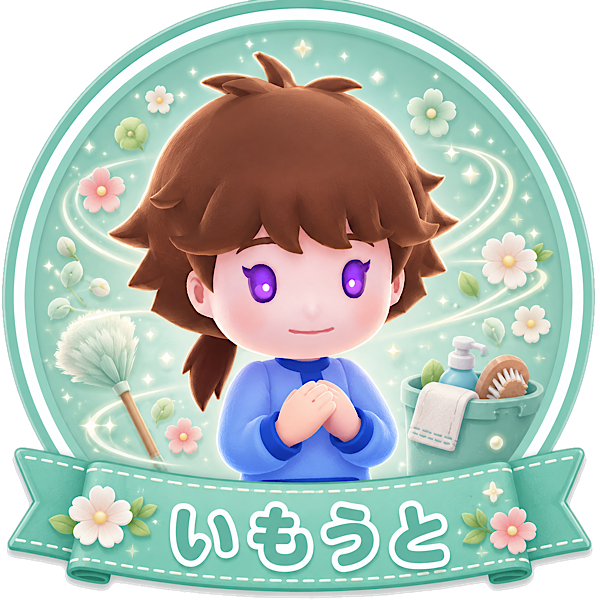

「気配り上手な環境整備」タイプ
あなたは、目の前の作業だけでなく、みんなが動きやすい環境まで気にできるタイプ。
直接料理を作るだけではなく、「床が汚れて動きにくい」「このままだと効率が落ちそう」といった変化に気づけます。
忙しい時ほど後回しにされがちな作業を、ちゃんと大事にできる人です。
小さな気配りでチーム全体の動きを良くする、縁の下の支え役です。
いもうとは床掃除を高速で行えるキャラです。
掃除は誰でもできますが、忙しい場面ではつい後回しになりがちで、放置すると全体の移動効率が落ちます。
だからこそ、掃除の大事さに気づける人が使うとチーム全体がかなり動きやすくなります。
細かいところまで気を配れるあなたにぴったりです。